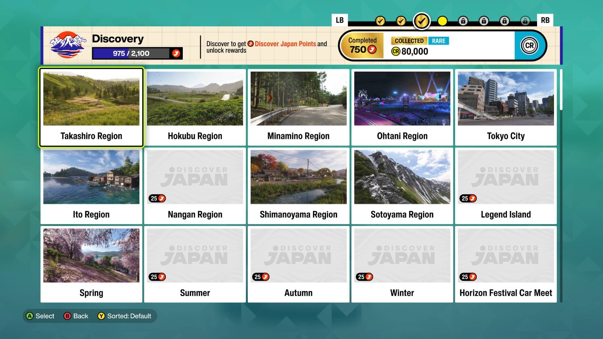

FH6 Complete Beginner Guide
Startup Walkthrough, Control Settings, Starter Cars & Beginner Tips
Introduction for New FH6 Players

FH6 initial startup game interface for new players, showing opening race and map unlock process
Forza Horizon 6 brings a brand new open-world Japan map with new racing mechanics, touge drifting zones, seasonal weather systems, and upgraded car customization features. Many new players feel confused about startup progression, control settings, and car selection. This full beginner guide from savebook.net helps you get started quickly and avoid common mistakes.
Japan Map & Terrain Beginner Guide
Forza Horizon 6's Japan map contains two core racing environments: neon urban Tokyo streets and narrow winding mountain touge passes. Mastering terrain-specific driving skills is the key to improving lap times and winning races.
Urban Street Racing Tips
- Avoid aggressive hard braking before 90-degree sharp corners to prevent severe understeer
- Equip stiffer front suspension to reduce nose dive during frequent braking
- Choose high turn-in response cars to adapt to dense continuous city corners
Mountain Touge Racing Tips
- Prioritize power-to-weight ratio over extreme top speed for narrow mountain roads
- Lightweight 400–500hp vehicles are the best choice for uphill and downhill touge races
- Avoid guardrail collisions, which will cause massive speed loss and break drift combos
20 Essential New Player Tips
Exploration Tips
- Explore hidden mountain branch roads to trigger rare exclusive car spawns
- Familiarize yourself with highway shortcuts early to save fast travel time
- Small rural towns hide massive skill challenges and hidden collectibles
- Use fast travel wisely - unlock first, use after finishing exploration
- Check the map for house icons - these unlock new safe houses
Car Usage Tips
- Try all car classes from Kei cars to supercars to adapt to different track types
- Off-road trucks perform perfectly in alpine rugged terrain zones
- Sports cars are the meta choice for all Tokyo urban street circuits
- Keep one AWD car for rainy/snow events - game changer
- Buy cheap classics early - they appreciate in value
Progression Tips
- Complete all seasonal limited-time events to obtain exclusive skins and rare cars
- Unlock garages near collectible-intensive areas to improve collection efficiency
- Sell duplicate vehicles in the garage to get fast and easy credits
- Focus Driver XP first - opens more event types
- Don't ignore Horizon Tour - easy credits for beginners
Advanced Beginner Skills
- Drifting basics: Handbrake + hard turn = easy drift start
- Clean restart: Reset car position to track center
- Skills farming: Combine drift + speed + near-miss for big XP
- Blueprint events: Adjust difficulty for better rewards
- Wheel spin daily: Check auction house for daily rotating cars
Game Version Differences
Forza Horizon 6 offers Standard, Deluxe and Premium editions. Premium edition provides early access, exclusive starter cars, seasonal bonus rewards and extra collectible hints. New players can choose versions based on their play frequency and collection needs.
Best Control Settings (Keyboard & Controller)
Default control settings in FH6 are not perfect for new players. We recommend optimized settings for better stability and easier drifting:
- Steering Sensitivity: 45-50 (balanced for racing and drifting)
- Braking Sensitivity: Default for beginners
- Traction Control: Keep On for new players
- Stability Control: Keep On to avoid rolling over
- Shift Settings: Automatic for beginners, manual for advanced players
Optimal Startup Progression
Follow this workflow to level up fast and unlock more events and cars:
- Complete initial opening races to unlock the main Japan map
- Finish early street racing events to earn initial credits
- Purchase your first reliable starter car
- Complete roadside collectibles to gain extra XP and level up
- Unlock seasonal events and championship tournaments
Top 5 Best Starter Cars for Beginners
- Honda Civic: Balanced speed and handling, perfect for street races
- Nissan 370Z: Great entry-level drifting car for mountain touge events
- Ford Focus RS: Excellent all-rounder for road and off-road races
- Subaru WRX STI: Stable control for rainy and snowy weather races
- Mazda RX-8: Easy to drift and modify for beginner drift challenges
Common Issues & Fixes
- Game Lag: Lower shadow quality and turn off high-resolution texture
- Car Unlock Stuck: Restart game and re-enter the event
- Reward Missing: Check game seasonal mailbox and inventory
- Difficult Drifting: Use our beginner drift tuning setup and reduce steering sensitivity